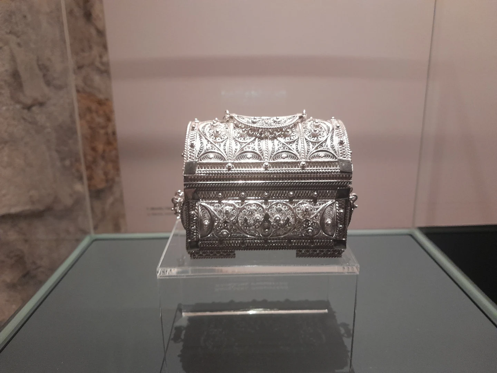
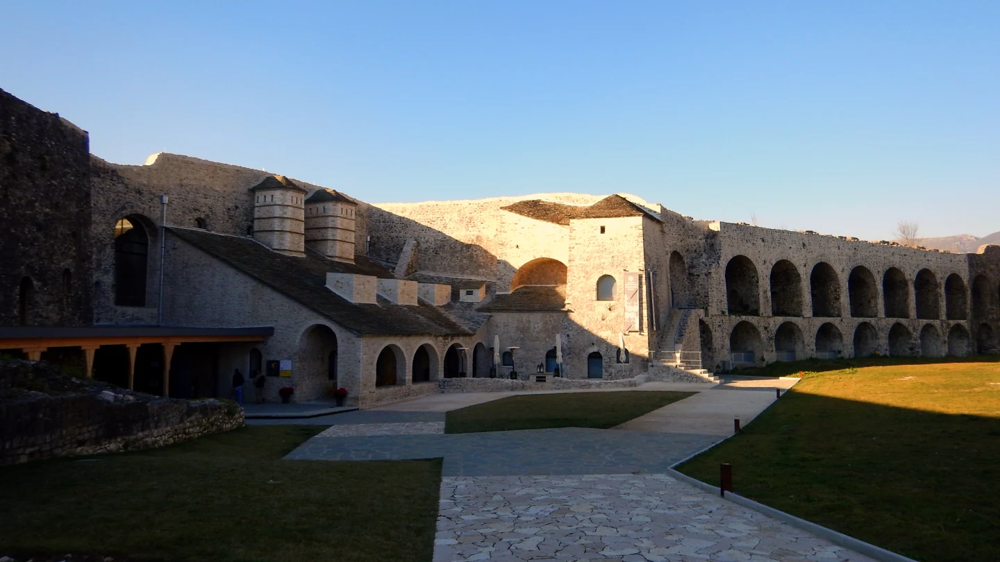

Ένα ασημένιο κόσμημα χωράει στην παλάμη. Κι όμως, μπορεί να κρατά μέσα του έναν ολόκληρο τόπο: το χέρι που το δούλεψε, τον άνθρωπο που το χάρισε, μια γιορτή, μια αναχώρηση, ένα σπίτι που θυμόμαστε. Στα Ιωάννινα, το ασήμι έγινε ένας από τους τρόπους με τους οποίους η πόλη έμαθε να μιλά για τον εαυτό της.
Πίσω από τη λάμψη του υπάρχει δουλειά. Σχέδιο, εργαλεία, φωτιά, δοκιμή και υπομονή. Κι ένας άνθρωπος που έσκυψε πάνω από το μέταλλο ώσπου να του δώσει μορφή. Για να γνωρίσουμε την πόλη των ασημουργών, αξίζει να ξεκινήσουμε από αυτόν.
Μια ιστορία δουλεμένη στο ασήμι
Η αργυροτεχνία αναπτύχθηκε στα Ιωάννινα ήδη από τον 16ο αιώνα και συνδέθηκε στενά με την ταυτότητά τους. Κατασκεύαζε κοσμήματα, χρηστικά και διακοσμητικά σκεύη, αλλά και εκκλησιαστικά αντικείμενα: έργα διαφορετικής χρήσης, που είχαν κοινό τους τόπο το εργαστήριο και την ανθρώπινη δεξιότητα.[1]
Η διαδρομή αυτή ανήκει σε μια ευρύτερη ηπειρώτικη ιστορία. Στο Μουσείο Αργυροτεχνίας, η αφήγηση απλώνεται στη μεταβυζαντινή περίοδο και συνδέει την τεχνολογία με την κοινωνία που τη χρειαζόταν. Ένα αντικείμενο γεννιόταν για κάποιον: για τη χρήση, την πίστη, τον στολισμό του. Έτσι, μαζί με τα σχέδια και τις τεχνικές, μαθαίνουμε να διαβάζουμε και τις ανάγκες των ανθρώπων.[2]
Στον πάγκο του μάστορα
Πριν φτάσει στην προθήκη, το ασήμι περνά από διαδοχικές εργασίες. Το φύλλο ανοίγεται, το μέταλλο σφυρηλατείται ή χυτεύεται, η επιφάνεια διακοσμείται. Στο μουσείο παρουσιάζονται το καμίνι, τα εργαλεία, η χύτευση στο χώμα και ένα γιαννιώτικο εργαστήριο του 20ού αιώνα. Η ομορφιά αποκτά έτσι το πραγματικό της βάρος: γίνεται κατανοητή ως αποτέλεσμα γνώσης και μόχθου.[3]

Η γνώση αυτή αποκτά πρόσωπο στην προσωπική διαδρομή του Πέτρου Μαργιόλα. Σε κείμενό του για τη συρματερή, θυμάται ότι άρχισε τη μαθητεία του στα Ιωάννινα στα δώδεκά του χρόνια, δίπλα σε μαστόρους, και συνέχισε στη σχολή μαθητείας του ΟΑΕΔ. Ένα παιδί που παρατηρεί, δοκιμάζει και μαθαίνει γίνεται, με τον χρόνο, ο τεχνίτης που μπορεί να δείξει την ίδια εργασία σε κάποιον νεότερο.[4]
Πριν γίνει κειμήλιο, το ασήμι υπήρξε δουλειά. Και πριν γίνει παράδοση, υπήρξε μάθημα από άνθρωπο σε άνθρωπο.
Η υπομονή της συρματερής
Στη συρματερή, ή φιλιγκράν, το σχέδιο χτίζεται με σύρματα. Στρίβονται, σχηματίζουν μοτίβα και ενώνονται, είτε αφήνοντας κενά ανάμεσά τους είτε τοποθετημένα πάνω σε μεταλλικό φύλλο. Το αποτέλεσμα μπορεί να μοιάζει ανάλαφρο, σχεδόν υφασμάτινο. Η λεπτομέρεια που βλέπουμε δεν είναι απλώς χαραγμένη σε μια ενιαία επιφάνεια: προκύπτει από τη συναρμογή μικρών μερών.[5]
Για τον μάστορα, αυτή η λεπτότητα σημαίνει σχεδιασμό και ακρίβεια. Ο Μαργιόλας περιγράφει τη χειροποίητη συρματερή ως εργασία χωρίς καλούπι αναπαραγωγής, στην οποία κάθε κομμάτι διατηρεί τα ιδιαίτερα γνωρίσματά του. Στα έργα του περιλαμβάνονται πόρπες φορεσιάς, κοσμήματα μαντηλιού, σκεύη και εκκλησιαστικά αντικείμενα. Η ίδια γνώση βρίσκει διαφορετικούς προορισμούς, χωρίς να χάνει τη σχέση της με το χέρι που την υπηρετεί.[4]
Κοιτάξτε λίγο πιο κοντά
Στα συρματερά έργα, ακολουθήστε με το βλέμμα τις ενώσεις και τα μικρά ανοίγματα του σχεδίου. Στα υπόλοιπα, παρατηρήστε το ανάγλυφο, τη χάραξη, τον όγκο. Η σφυρηλάτηση, η χύτευση, η συρματερή και το σαβάτι ανήκουν στο τεχνικό λεξιλόγιο που παρουσιάζει το Μουσείο· κάθε όρος ανοίγει έναν διαφορετικό δρόμο από την πρώτη ύλη στο τελικό αντικείμενο.[3]
Όσα κρατά ένα σπίτι
Κοσμήματα και εξαρτήματα ενδυμάτων του 19ου και του 20ού αιώνα σώζουν κάτι περισσότερο από μια προτίμηση στο ωραίο. Η μορφή τους συνδέεται με τη συλλογική αισθητική και την κοινωνική ταυτότητα εκείνων που τα φορούσαν. Το στολίδι συμμετείχε στον τρόπο με τον οποίο ο άνθρωπος παρουσιαζόταν στον κόσμο· ήταν μέρος της φορεσιάς και της ζωής του.[6]

Κι όταν ένα τέτοιο αντικείμενο μένει στην οικογένεια, αποκτά μια δεύτερη ιστορία. Μπορεί να θυμίζει έναν άνθρωπο που δεν είναι πια εδώ, μια φωτογραφία που έχουμε δει πολλές φορές, ένα δώρο του οποίου την αφορμή γνωρίζουν μόνο οι μεγαλύτεροι. Η αξία του τότε μετριέται και με όσα μπορούμε ακόμη να αφηγηθούμε γι’ αυτό.

Από τους Καλαρρύτες, με την τέχνη στις αποσκευές
Στα ορεινά της Ηπείρου, οι Καλαρρύτες αναδείχθηκαν τον 18ο και τον 19ο αιώνα σε σημαντικό κέντρο αργυροχοΐας. Οι τεχνίτες ακολούθησαν εμπορικούς δρόμους που έφταναν στην Τεργέστη, στο Λιβόρνο, στη Μόσχα, στη Βιέννη και στην Αίγυπτο. Ανάμεσά τους ξεχωρίζει ο Αθανάσιος Τζημούρης, αρχιχρυσικός του Αλή πασά και δάσκαλος της τέχνης. Ευαγγελιοκάλυμμα δικής του κατασκευής συνδέεται με τον ναό του Αγίου Νικολάου των Καλαρρυτών.[7]
Τον Ιούνιο του 1821, η καταστροφή του χωριού έσπρωξε κατοίκους του στην προσφυγιά. Πολλοί κατέφυγαν στη Ζάκυνθο και στην Κέρκυρα, άλλοι στην Ιταλία, μεταφέροντας μαζί με τα λιγοστά τους υπάρχοντα την τεχνική τους γνώση. Αυτή η πλευρά της αργυροτεχνίας αγγίζει μια βαθύτερη ηπειρώτικη εμπειρία: ο τόπος χάνεται από τα μάτια, αλλά κάτι δικό του συνεχίζει να ζει μέσα σε όσα ξέρουν να κάνουν τα χέρια.[7]
Σήμερα, στο παλιό πέτρινο δημοτικό σχολείο των Καλαρρυτών, το μουσείο που εγκαινιάστηκε το 2015 επιστρέφει αυτή την ιστορία στην κοινότητά της. Παρουσιάζει εργαλεία, τεχνικές και έργα, φέρνοντας τους ντόπιους δημιουργούς στο κέντρο της αφήγησης.[8]
Στο Ιτς Καλέ, η δουλειά αποκτά φωνή

Στον δυτικό προμαχώνα της νοτιοανατολικής ακρόπολης του Κάστρου, στο Ιτς Καλέ, το Μουσείο Αργυροτεχνίας ενώνει την ιστορία με την τεχνολογία. Η συλλογή έργων από τον 18ο έως τον 20ό αιώνα περιλαμβάνει κοσμήματα, ασημικά του σπιτιού, προσωπικά είδη, όπλα και πολεμική εξάρτυση. Παρουσιάζει επίσης δουλειές σύγχρονων δημιουργών της περιοχής, κρατώντας ανοιχτή τη συνομιλία με το παρόν.[2]
Αξίζει να σταθεί κανείς και στα εργαλεία. Να αναζητήσει τη διαδρομή που προηγήθηκε της τελειωμένης μορφής. Έτσι, ακόμη κι ένα μικρό έκθεμα παύει να είναι μακρινό: μπορούμε να σκεφτούμε τον χρόνο του, την προσπάθεια και τον άνθρωπο που χρειάστηκε για να υπάρξει.
Η παράδοση συνεχίζεται όταν μαθαίνεται
Το 2023 η γιαννιώτικη αργυροτεχνία εγγράφηκε στο Εθνικό Ευρετήριο Άυλης Πολιτιστικής Κληρονομιάς της Ελλάδας. Η αναγνώριση αφορά μια τέχνη που εξακολουθεί να ασκείται, μαζί με τις γνώσεις που χρειάζονται για να συνεχιστεί.[1]
Η συνάντηση παλιότερης εμπειρίας και νέας δημιουργίας φαίνεται και σε μια πρόσφατη δράση του μουσείου: στο πρόγραμμα της 17ης Οκτωβρίου 2026 είχαν θέση τόσο η επίδειξη συρματερής από τον Πέτρο Μαργιόλα όσο και η παρουσίαση σχεδίων από τη Σοφία Γρηγορίου, φοιτήτρια της Σχολής Καλών Τεχνών του Πανεπιστημίου Ιωαννίνων. Δίπλα στη δεξιοτεχνία, η αναζήτηση μιας νέας μορφής· δίπλα στον μάστορα, η επόμενη γενιά.[9]
Τα Ιωάννινα παραμένουν πόλη των ασημουργών όσο υπάρχουν άνθρωποι που δίνουν χρόνο σε αυτή τη γνώση. Κι εμείς μπορούμε να τη συναντήσουμε με λίγη περισσότερη προσοχή: να ρωτήσουμε ποιος έφτιαξε ένα αντικείμενο, πώς δούλεψε, από ποιον έμαθε. Ίσως τότε, πίσω από τη λάμψη του ασημιού, αναγνωρίσουμε αυτό που μας συγκινεί περισσότερο στον τόπο μας: τη φροντίδα με την οποία ο ένας παραδίδει κάτι στον άλλον.
Πηγές και διαδρομές για περισσότερο διάβασμα
- Υπουργείο Πολιτισμού · Ελληνική Χειροτεχνία: Ήπειρος — Η γιαννιώτικη αργυροχοΐα, οι εφαρμογές της και η αναγνώριση του 2023.
- Πολιτιστικό Ίδρυμα Ομίλου Πειραιώς · Μουσείο Αργυροτεχνίας — Η μόνιμη έκθεση, το ιστορικό πλαίσιο και οι συλλογές. Εδώ βρίσκονται και οι επίσημες πληροφορίες επίσκεψης.
- Υπουργείο Πολιτισμού · Γνωρίζοντας το Μουσείο Αργυροτεχνίας στα Ιωάννινα, 19.08.2022 — Το εργαστήριο, οι πρώτες ύλες και οι τεχνικές.
- Πέτρος Μαργιόλας · Φιλιγκράν στα χρόνια του κορωνοϊού — Προσωπική μαρτυρία για τη μαθητεία και την εργασία στη συρματερή.
- Η τέχνη της συρματερής · The Art of Filigree — Η κατασκευή με σύρμα και η προσπάθεια μετάδοσης της γνώσης.
- ΠΙΟΠ · Οι αμέτρητες όψεις του Ωραίου, 2018 — Κοσμήματα, εξαρτήματα ενδυμάτων και η κοινωνική σημασία τους.
- Δήμος Βορείων Τζουμέρκων · Μουσείο Καλαρρυτινής Αργυροτεχνίας — Οι εμπορικές διαδρομές, ο Αθανάσιος Τζημούρης και η προσφυγιά του 1821.
- Υπουργείο Πολιτισμού · Μουσείο Καλαρρυτινής Αργυροτεχνίας — Η ίδρυση, ο χώρος και η μουσειακή αφήγηση.
- ΠΙΟΠ · Επίδειξη συρματερής τεχνικής, 17.10.2026 — Παρουσίαση τεχνικής και σχεδιασμού από τον Πέτρο Μαργιόλα και τη Σοφία Γρηγορίου.
Οι φωτογραφίες μέσα στο κείμενο είναι πραγματικές λήψεις από το Μουσείο Αργυροτεχνίας. Οι δημιουργοί, οι πρωτότυπες αναρτήσεις και η άδεια χρήσης αναφέρονται σε κάθε λεζάντα.